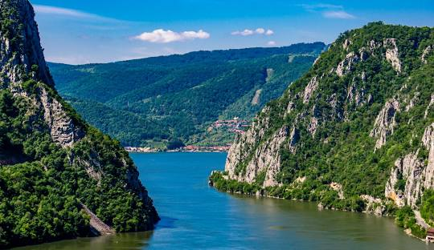
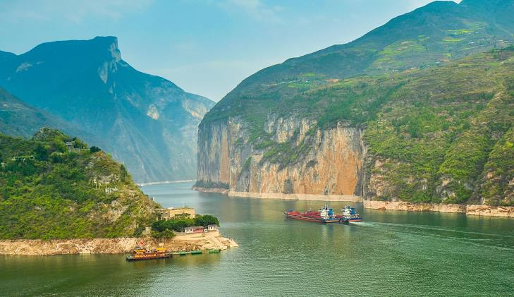

נהר הדנובה
הדנובה זורם מגרמניה לים השחור ועובר דרך 10 מדינות. הוא מהווה עורק תחבורתי ותרבותי חשוב באירופה, ועובר בין ערים כמו וינה, בודפשט ובלגרד.
נהר דואורו
נהר הדואורו מתחיל בספרד ומסתיים בפורטוגל, שם הוא נשפך באוקיינוס האטלנטי. הנהר עובר בעמקים ירוקים המפורסמים בייצור יין פורט.

נהר יאנגטצה
היאנגטצה הוא הנהר הארוך ביותר באסיה. הוא עובר דרך סין המודרנית והמסורתית, ונחשב לעמוד השדרה של המדינה מבחינה היסטורית, כלכלית וגאוגרפית.
